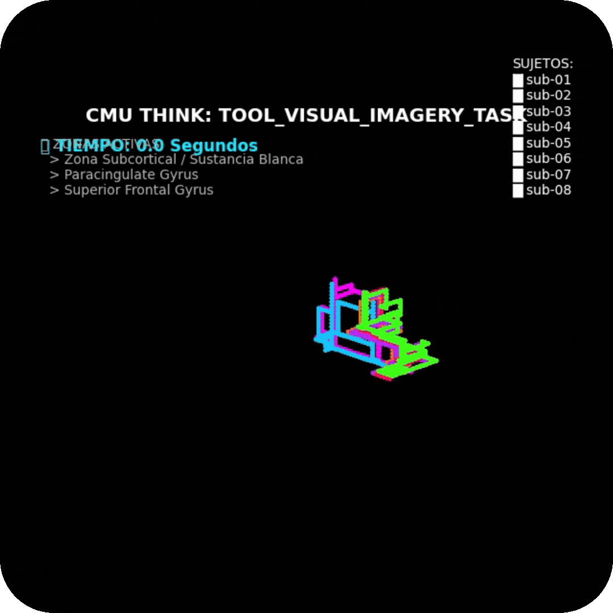
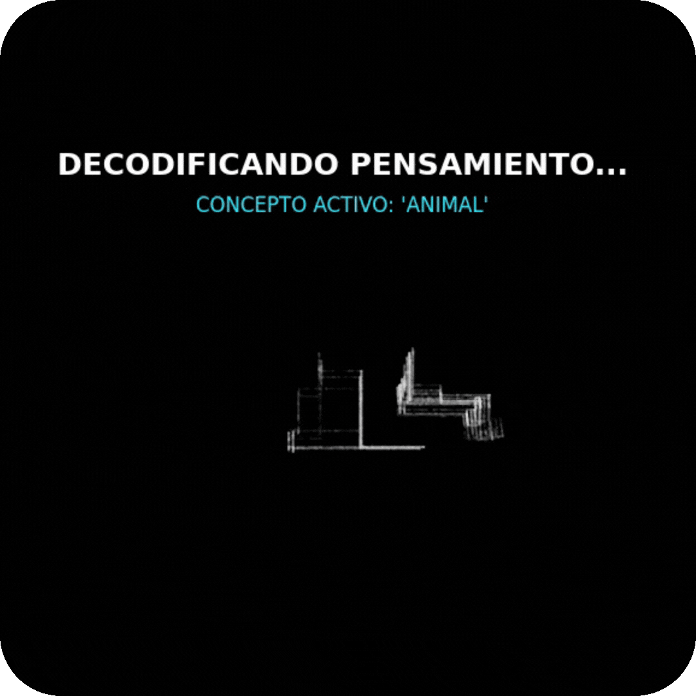

La resolución del análisis depende de la estructura de los datos. CMU Think escala desde la limpieza básica de la señal hasta la reconstrucción de la actividad neuronal en espacio y tiempo.
El problema
El cráneo es un medio conductor: la actividad de una región se propaga y llega a muchos electrodos a la vez. Sumado al promediado estadístico de los filtros clásicos, el origen real de cada evento se vuelve difícil de localizar.
Un electrodo no captura solo su zona, sino una mezcla atenuada de regiones vecinas. La localización espacial se pierde.
El promediado temporal de los filtros clásicos diluye la dinámica rápida de la señal e introduce retardo.
Las técnicas estadísticas para mitigarlo requieren modelos costosos, suposiciones de tejido y largas calibraciones.
Separa la información coherente del ruido por su estructura y restaura la correspondencia entre electrodo y fuente, sin hardware adicional.
"La señal no se recupera eliminando ruido. Se recupera entendiendo su estructura."
Cómo funciona
A medida que el sistema recibe información más rica, escala de la limpieza básica a la reconstrucción completa de la actividad en espacio y tiempo.
Depura interferencias y preserva la integridad espectral de la señal, detectando en tiempo real eventos relevantes con alta claridad.
Al integrar información anatómica, localiza la actividad en representaciones espaciales precisas, revelando regiones activas y patrones estructurales.
Con datos multimodales completos, reconstruye la dinámica de la actividad en tiempo y espacio, generando una representación funcional de alta resolución para análisis avanzado.
La diferencia
Los equipos de medición etiquetan sus canales con códigos propios que no tienen significado anatómico. CMU Think los traduce al estándar internacional, carga el montaje espacial y aplica un filtro que actúa como lente: enfatiza la fuente local y separa contribuciones lejanas.

Una imagen estática pierde la dinámica de la actividad. CMU Think genera una secuencia de fotogramas que muestra cómo evoluciona la actividad a lo largo del tiempo, fotograma a fotograma.

Hacia la neurotecnología activa
Cuando se conoce con precisión dónde y cuándo ocurre un evento, se abre la puerta a sistemas que no solo leen la actividad, sino que pueden responder a ella de forma sincronizada. CMU Think aporta la capa de lectura espaciotemporal que estos escenarios de investigación requieren.
Aplicaciones de investigación. No constituye un dispositivo médico ni una herramienta de diagnóstico o tratamiento.
Ingesta universal
El sistema ingiere distintos niveles de calidad de datos sin perder su función central, y ajusta lo que puede entregar según lo que recibe.
Tolerancia a fallos: un dato corrupto no detiene el análisis del resto. Cada caso problemático se reporta y el pipeline continúa con la información disponible.
Integración
Un camino por etapas, sin compromisos prematuros.
Analizamos tu caso de uso, datos disponibles, restricciones y objetivos.
Validamos resolución, estabilidad y trazabilidad sobre tus propios datos.
Desplegamos como SDK, módulo integrado, servidor local o solución a medida.
Cuéntanos tu caso de uso y agendamos un diagnóstico técnico.